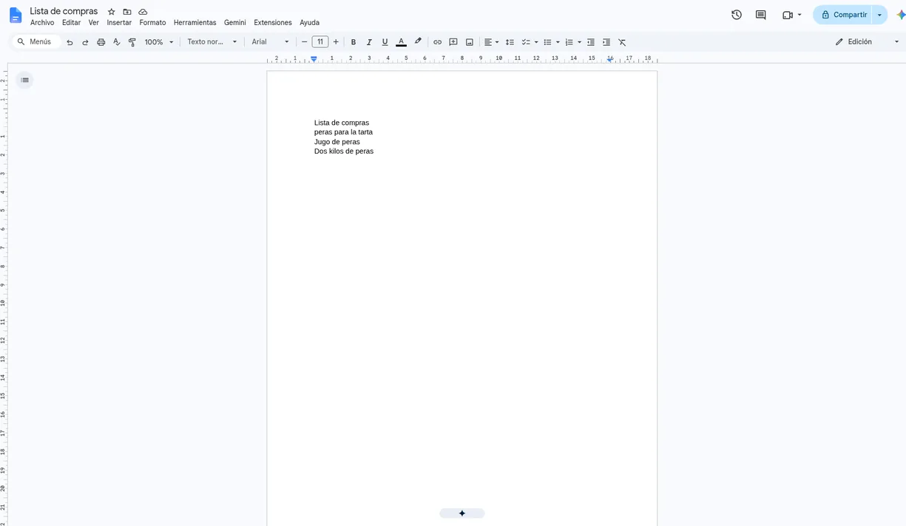
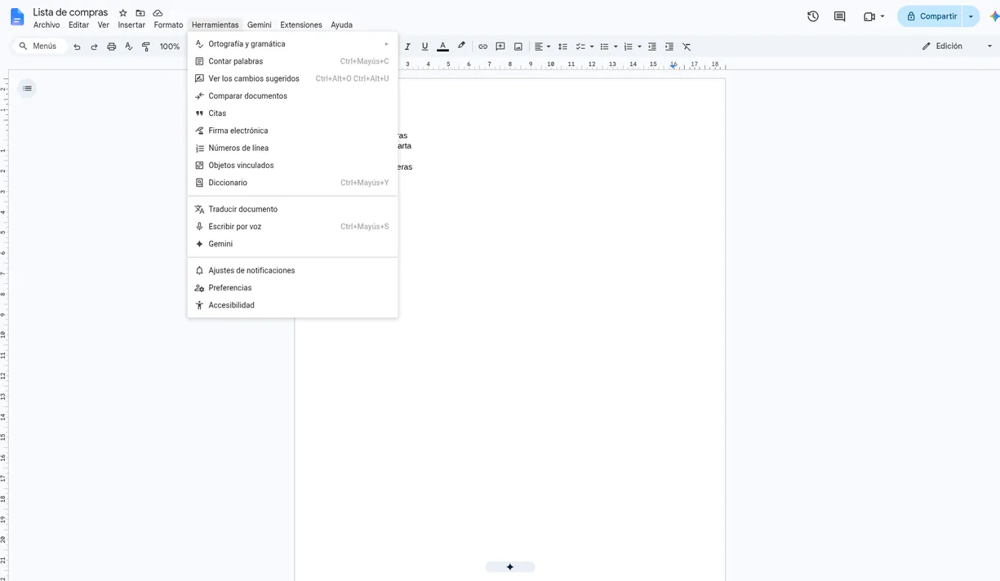
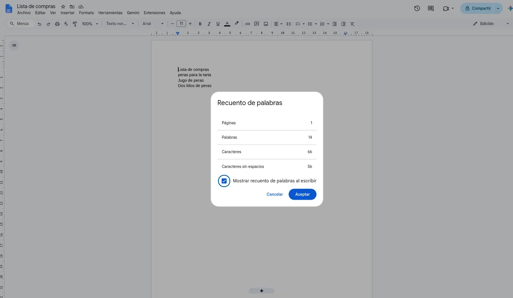
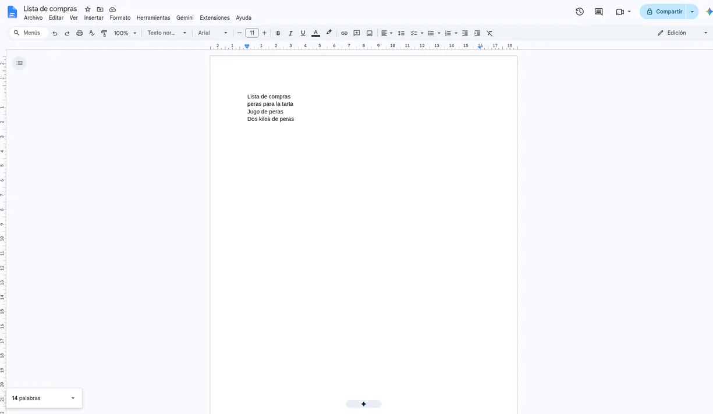
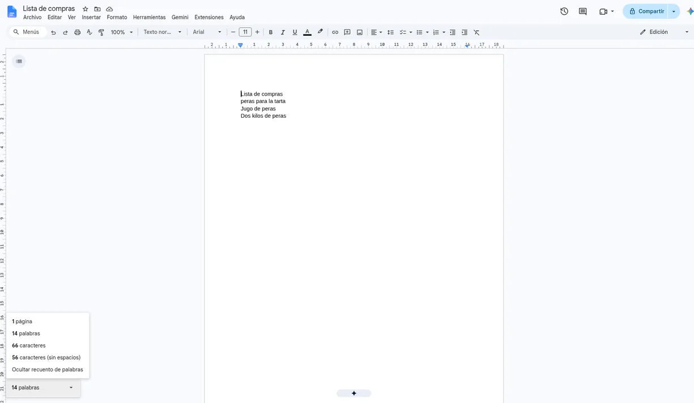

Curso de Google Documentos › Herramientas › Lección 42
Lección 42 de 53 · menú Herramientas
Cómo contar las palabras de un Google Doc en 3 pasos
Fecha del video: · Programado
¿Querés saber cuántas palabras tiene tu documento? En Documentos de Google las contás en 3 pasos.
En el ejemplo usamos una lista de compras de prueba. El menú muestra «Contar palabras»; el cuadro que se abre se llama «Recuento de palabras» y se cierra con «Aceptar».

Paso 1: Herramientas → Contar palabras
Abrí el menú Herramientas y tocá «Contar palabras». En el menú también aparece el atajo Ctrl + Mayús + C.

Paso 2: mirá el recuento
En el cuadro «Recuento de palabras» ves Páginas, Palabras, Caracteres y Caracteres sin espacios. En el ejemplo, el documento tiene 14 palabras. Si no seleccionás un fragmento, el recuento es de todo el documento, excepto encabezados, pies de página y notas al pie.

Paso 3: dejalo visible mientras escribís
Si querés ver el recuento mientras escribís, marcá «Mostrar recuento de palabras al escribir» y tocá «Aceptar».

El recuadro queda abajo a la izquierda. Tocalo para ver páginas, palabras y caracteres, o para elegir «Ocultar recuento de palabras».


Tip: si seleccionás un párrafo antes de abrir Herramientas → Contar palabras, el recuento es solo de ese fragmento. La ayuda de Google nombra el comando como «Recuento de palabras»; en el menú de esta cuenta se ve como «Contar palabras».
Mirá el Short
Estreno del Short: 20/11/2026 · 17:00 (hora Argentina)
Video relacionado: Google Docs para principiantes: lo básico paso a paso — el video largo del Bloque 1 – Lo básico (verlo en YouTube).
Fuente oficial: Ayuda de Editores de Documentos de Google. Capturas propias en un documento de ejemplo («Lista de compras»). El video usa voz generada con IA.